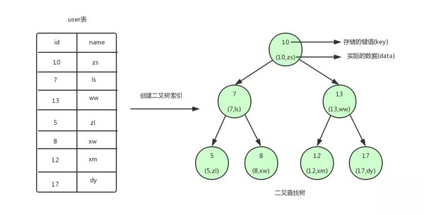
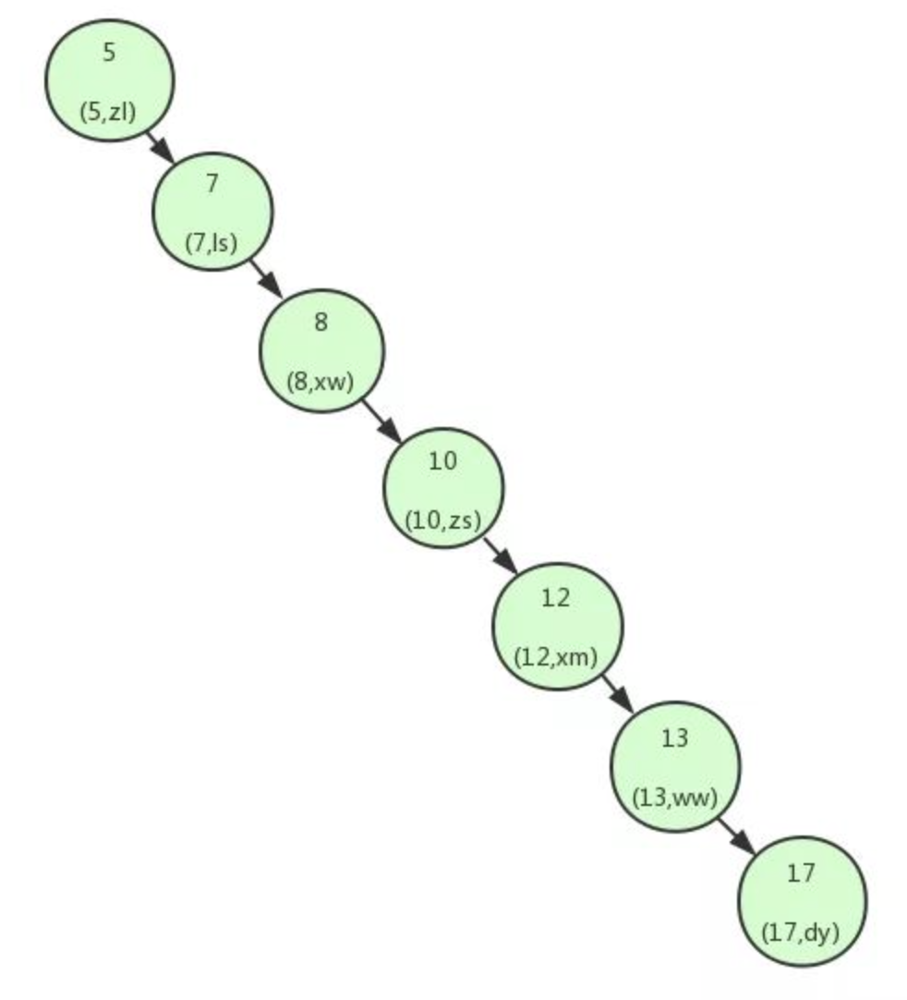
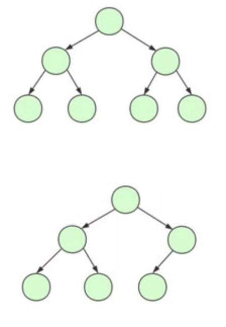
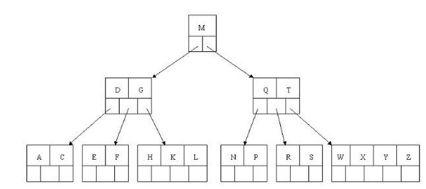
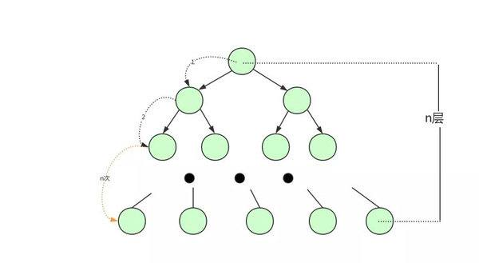
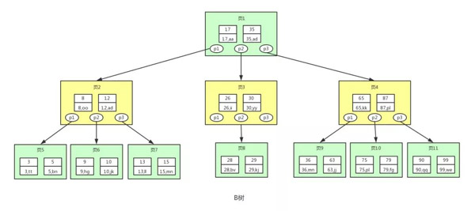
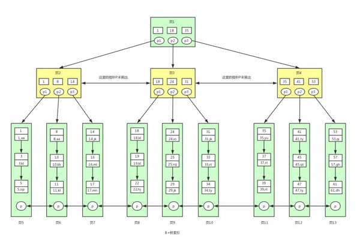

二叉树,平衡二叉树,B-Tree,B+Tree
本文最后更新于：2022年8月11日 中午
背景
一般说MySQL的索引，都清楚其索引主要以B+树为主，此外还有Hash、RTree、FullText。本文简要说明一下MySQL的B+Tree索引，以及和其相关的二叉树、平衡二叉树、B-Tree
说明
二叉查找树（BST）
概念
二叉查找树是基于二分查找法来提高数据查找速度的二叉树的数据结构；关于二分查找法的时间复杂度可以看 时间复杂度 O(log n) 意味着什么？。特点
二叉查找树是采用二分查找法把数据按规则组装成一个树形结构的数据，减少无关数据的检索，提升了数据检索的速度；二叉树的数据结构有以下规则：1.非叶子节点只能允许最多两个子节点存在。
2.每一个非叶子节点数据分布规则为左边的子节点小当前节点的值，右边的子节点大于当前节点的值；
即二叉查找树的特点就是任何节点的左子节点的键值都小于当前节点的键值，右子节点的键值都大于当前节点的键值。 顶端的节点称为根节点，没有子节点的节点我们称之为叶节点。以下图中的圆为二叉查找树的节点，节点中存储了键(key)和数据(
data)
查找结点值的方法就是二分查找法：查找次数就是树的高度。二叉查找树可以任意地构造 如果向一方倾斜的二叉树是不平衡的，查询效率就低了，二叉查找树变成了一个链表。如下图：

在上面的2张图中，查找键值为17的数据，第一张图里需要3次IO，第2张图里需要7次IO。原因是二叉查找树变得不平衡了，也就是高度太高了，从而导致查找效率的不稳定。为了解决这个问题，需要保证二叉查找树一直保持平衡，就需要用到平衡二叉树了。
平衡二叉树（AVL）
在满足二叉查找树特性的基础上，如不是空树，任何一个结点的左子树与右子树都是平衡二叉树，并且高度之差的绝对值不超过 1。 类似于：

关于平衡二叉树的可以看 什么是平衡二叉树（AVL）该文章说明，平衡二叉树相比于二叉查找树来说，查找效率更稳定，总体的查找速度也更快。**
需要注意的是平衡二叉树是每个节点只存储一个键值和数据的。**
B树(B-Tree)
概念
B树和平衡二叉树不同，B树属于多叉树又名平衡多路查找树（查找路径不只两个），数据库索引里大量使用者B-Tree和B+Tree的数据结构。特点
1.方式：所有节点关键字是按递增次序排列，并遵循左小右大原则；
2.子节点数：非叶节点的子节点数>1，且<=M ，且M>=2，空树除外（注：M阶代表一个树节点最多有多少个查找路径，M=M路，当M=2则是2叉树,M=3则是3叉）；
3.关键字数：枝节点的关键字数量大于等于ceil(M/2)-1个且小于等于M-1个（注：ceil()是个朝正无穷方向取整的函数 如ceil(1.1)结果为2);
4.所有叶子节点均在同一层、叶子节点除了包含了关键字还包含了数据;
最后我们用一个图和一个实际的例子来理解B树（这里为了理解方便我就直接用实际字母的大小来排列C>B>A）

图中可以看到BTree的单个节点可以存储多个键值和数据的平衡树。和平衡二叉树相比：
比如要存储海量的数据，因为（平衡）二叉树的每个节点只存储一个键值和数据的，二叉树的节点将会非常多，高度也会及其高，当查找数据时也会进行很多次磁盘IO，查找的效率将会极低，大致的二叉树结构如下：

为了解决平衡二叉树的这个弊端，需要一种单个节点可以存储多个键值和数据的平衡树（BTree）：

从上图可以看出，B树相对于平衡二叉树，每个节点存储了更多的键值(key)和数据(data)，并且每个节点拥有更多的子节点，子节点的个数一般称为阶，上述图中的B树为3阶B树，高度也会很低。
基于这个特性，B树查找数据读取磁盘的次数将会很少，数据的查找效率也会比平衡二叉树高很多。假如我们要查找id=28的用户信息，那么我们在上图B树中查找的流程如下：
- 先找到根节点也就是页1，判断28在键值17和35之间，我们那么我们根据页1中的指针p2找到页3。
- 将28和页3中的键值相比较，28在26和30之间，我们根据页3中的指针p2找到页8。
- 将28和页8中的键值相比较，发现有匹配的键值28，键值28对应的用户信息为(28,bv)。
区别:
B树相对于平衡二叉树的不同是：每个节点包含的关键字增多了，特别是在B树应用到数据库中的时候，数据库充分利用了磁盘块的原理（磁盘数据存储是采用块的形式存储的，每个块的大小为4K，每次IO进行数据读取时，同一个磁盘块的数据可以一次性读取出来）把节点大小限制和充分使用在磁盘快大小范围；把树的节点关键字增多后树的层级比原来的二叉树少了，减少数据查找的次数和复杂度。
相同数量的key在B-Tree中生成的节点要远远少于二叉树中的节点，相差的节点数量就等同于磁盘IO的次数。这样到达一定数量后，性能的差异就显现出来了。
B+树（B+Tree）
概念
B+树是B树的一个进化，相对于B树来说B+树更充分的利用了节点的空间，让查询速度更加稳定，其速度完全接近于二分法查找。结构如下：

为什么说B+树查找的效率要比B树更高、更稳定；我们先看看两者的区别：（1）B+树的非叶子节点不保存数据，只进行数据索引（关键字记录的指针），这样使得B+树每个非叶子节点所能保存的关键字大大增加；
（2）B+树叶子节点保存了父节点的所有关键字记录的指针，所有数据地址必须要到叶子节点才能获取到。所以每次数据查询的次数都一样；
（3）B+树叶子节点的关键字从小到大有序排列，左边结尾数据都会保存右边节点开始数据的指针；
（4）B+树****非叶子节点的子节点数=关键字数;
特点
1、B+树的层级更少：相较于B树，B+每个非叶子节点存储的关键字数更多，树的层级更少所以查询数据更快；
2、B+树查询速度更稳定：B+所有关键字数据地址都存在叶子节点上，所以每次查找的次数都相同所以查询速度要比B树更稳定;
3、B+树天然具备排序功能：B+树所有的叶子节点数据构成了一个有序链表，在查询大小区间的数据时候更方便，数据紧密性很高，缓存的命中率也会比B树高。
4、B+树全节点遍历更快：B+树遍历整棵树只需要遍历所有的叶子节点即可，而不需要像B树一样需要对每一层进行遍历，这有利于数据库做全表扫描。
B树相对于B+树的优点是：如果经常访问的数据离根节点很近，而B树的非叶子节点本身存有关键字其数据的地址，所以这种数据检索的时候会要比B+树快。
**根据上图我们来看下B+树和B树有什么不同：
B+Tree 非叶子节点上是不存储数据的，仅存储键值，数据存储在同一层的叶节点，而B-Tree节点中不仅存储键值，也会存储数据。之所以这么做是因为在数据库中页的大小是固定的，innodb中页的默认大小是16KB。如果不存储数据，那么就会存储更多的键值，相应的树的阶数(节点的子节点树)
就会更大，树就会更矮更胖，如此一来我们查找数据进行磁盘的IO次数有会再次减少，数据查询的效率也会更快。另外，B+Tree的阶数是等于键值的数量的，如果B+Tree一个节点可以存储1000个键值，那么3层B+树可以存储1000×1000×1000=10亿个数据。一般根节点是常驻内存的，所以一般我们查找10亿数据，只需要2次磁盘IO**
。因为B+Tree索引的所有数据均存储在叶子节点，而且数据是按照顺序排列的。那么B+树使得范围查找，排序查找，分组查找以及去重查找变得异常简单。而B-Tree 因为数据分散在各个节点，要实现这一点是很不容易的。
B+Tree 中各个页之间是通过双向链表连接的，叶子节点中的数据是通过单向链表连接的。
其实上面的B-Tree也可以对各个节点加上链表。其实这些不是它们之前的区别，是因为在mysql的innodb存储引擎中，索引就是这样存储的。也就是说上图中的B+Tree索引就是innodb中B+Tree索引真正的实现方式，准确的说应该是聚集索引。
通过上图可以看到，在innodb中，数据页之间通过双向链表连接以及叶子节点中数据之间通过单向链表连接的方式可以找到表中所有的数据。
注意：MyISAM中的B+树索引实现与innodb中的略有不同。在MyISAM中，B+树索引的叶子节点并不存储数据，而是存储数据的文件地址。
总结
B+Tree 结构是从二叉查找树，平衡二叉树和B-Tree这三种数据结构演化来的，他们之前的区别上面已经介绍过，现在大致的总结下，如下：
1.二叉查找树是基于二分查找法来提高数据查找速度的二叉树的数据结构，减少无关数据的检索，提升了数据检索的速度。非叶子节点只能允许最多两个子节点存在，每一个非叶子节点数据分布规则为左边的子节点小当前节点的值，右边的子节点大于当前节点的值，每个节点只存储一个键值和数据的。
2.平衡二叉树满足二叉查找树特性的基础上，如不是空树，任何一个结点的左子树与右子树都是平衡二叉树，并且高度之差的绝对值不超过 1。
3.B-TreeB和平衡二叉树不同，B-Tree属于多叉树又名平衡多路查找树， B-Tree相对于平衡二叉树，每个节点存储了更多的键值(key)和数据(data)，并且每个节点拥有更多的子节点。
4.B+Tree和B-Tree不同，B+Tree在非叶子节点上，不保存数据，只存储键指针，能存储更多的键值，相应的树的阶数(节点的子节点树)就会更大，树就会更矮更胖，如此一来我们查找数据进行磁盘的IO次数有会再次减少，数据查询的效率也会更快。并且B+树索引的所有数据均存储在叶子节点，而且数据是按照顺序排列的。那么B+Tree使得范围查找，排序查找，分组查找以及去重查找变得异常简单。